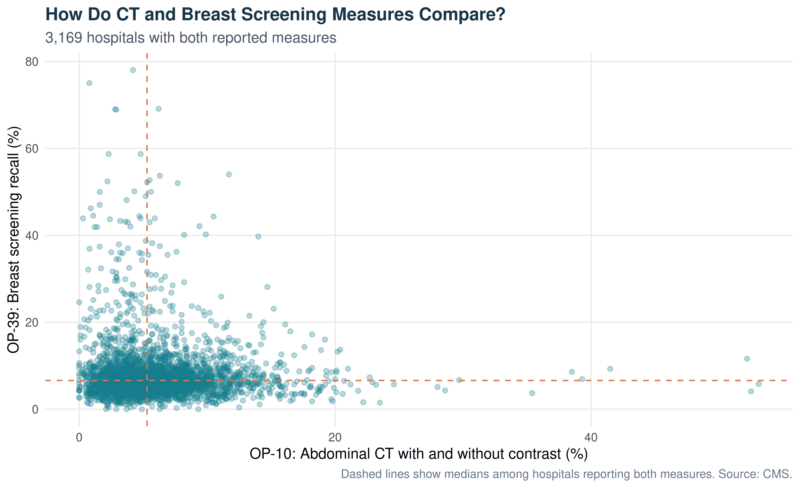

Hospital Comparisons
A closer look at how outpatient CT and breast screening measures vary across U.S. hospitals.
The Story: Two Measures, Different Patterns
Hospitals across the United States report outpatient imaging measures to the Centers for Medicare & Medicaid Services (CMS). Two of these measures describe different parts of medical imaging: OP-10, the percentage of outpatient abdominal CT examinations performed both with and without contrast material, and OP-39, the percentage of breast cancer screening examinations followed by additional imaging within 45 days.
A natural question is whether hospitals reporting higher percentages for one measure also tend to report higher percentages for the other. Because these measures concern different procedures and patient populations, any relationship must be interpreted carefully.
What Do the Hospital-Level Data Show?
The chart includes 3,169 hospitals with valid values for both measures. The median OP-10 percentage in this group is 5.3%, while the median OP-39 percentage is 6.6%. The Spearman rank correlation between the two measures is -0.01, which describes how strongly their reported percentages tend to move together across hospitals.
The points also show that hospitals can have quite different combinations of CT and breast screening percentages. This is an important limitation of using one number to describe a facility: neither measure alone provides a complete assessment of hospital quality. Differences may reflect clinical practices, patient populations, or other factors that cannot be established from this dataset.
Explore Individual Hospitals
The fixed chart above tells the overall story. The interactive version below lets you investigate individual facilities.
How to use it: Hover over any point to see the hospital name, state, and both reported percentages. You can also zoom into clusters of hospitals.
Key Takeaway
This comparison highlights why hospital imaging statistics require context. Even when two measures are reported by the same facility, they describe different clinical processes and should not automatically be interpreted as indicators of overall performance.
For more information, visit the CMS Outpatient Imaging Efficiency dataset.